Table of Contents
Introduction
The Flight Attendant Panel (FAP) is the cabin crew's control centre on the Airbus A320. It is part of the CIDS, the Cabin Intercommunication Data System, and it is usually installed at the forward attendant station near door L1.
From the FAP the cabin crew controls and monitors the cabin lighting, announcements and boarding music, doors and escape slides, cabin temperature, potable water and waste, lavatory smoke detection and passenger calls. The A320 FAP Simulator reproduces the panel on an Android tablet so students can practise every function in the classroom.
How the panel is organized
- Touchscreen: the upper part. It shows the header, the page title bar, the selected page and two rows of page tabs.
- Hard keys: ten physical keys below the screen (EVAC, lighting, smoke reset, and more). They keep working even while the touchscreen is locked. See Chapter 14.
- Memory card slots: PRAM (pre-recorded announcements), CAM (cabin assignment module) and OBRM (on-board replaceable module, for software loading).
Color conventions
The simulator follows the real A320 CIDS color logic:
| Color | Meaning |
|---|---|
| GREY | Key available, not selected. |
| GREEN | Selected / active (for example the light level in use, or the open page). |
| AMBER | Caution: something needs attention (passenger call, waste tank full, smoke being monitored). |
| RED | Alarm: immediate action (smoke, slide deployed, evacuation). Red items flash. |
TRAINER boxes
Controls inside a dashed cyan box labelled TRAINER are not part of the real FAP. They let the instructor simulate what happens away from the panel, such as a passenger pressing a call button, smoke appearing in a lavatory, the crew moving a door arming lever, or the flight crew changing a cockpit selector. Everything outside these boxes behaves like the aircraft panel.
Getting Started
Installing the app
- On the website, scan the QR code with the tablet camera or tap DOWNLOAD APK.
- When Android asks, allow Install unknown apps for your browser, then install.
- Open A320 FAP and hold the tablet in landscape. The app runs full screen.
Requirements: Android 7.0 or newer. A landscape tablet is recommended.
Activating with a license code
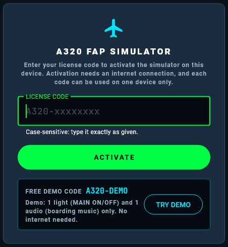
- Connect the tablet to the internet (needed once, for activation only).
- Type your license code exactly as given, for example A320-k7Rm9Qx2. Codes are case-sensitive: capital and small letters matter.
- Tap ACTIVATE. After activation the simulator works fully offline.
- Each code works on one device only and can never be used on another device.
- Reinstalling is safe. If the app is uninstalled and installed again on the same tablet, it recognizes the device and unlocks automatically (online) without a new code. If the tablet is offline at that moment, connect it and tap CHECK AGAIN.
- A factory reset of the tablet counts as a new device: move the license first (see below), or ask the administrator to release it.
Moving your license to a new tablet
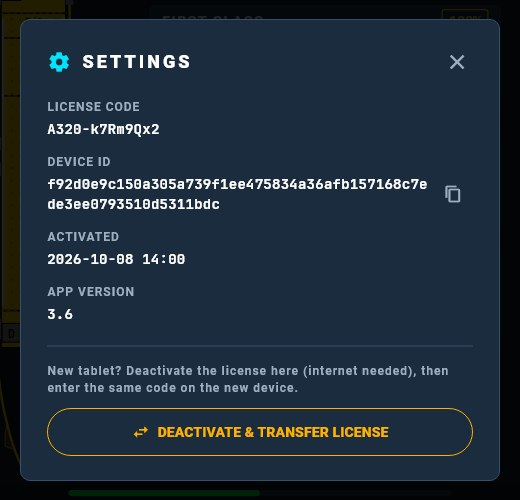
- On the old tablet, connected to the internet, tap the gear icon in the top-right corner of the screen.
- Settings shows your license code, the device ID and the activation date. Write down the code.
- Tap DEACTIVATE & TRANSFER LICENSE and confirm. The old tablet locks and returns to the activation screen.
- On the new tablet, enter the same code and tap ACTIVATE.
Free demo
Without a license code you can try the simulator: tap TRY DEMO on the start screen, or enter the demo code A320-DEMO. No internet is needed.
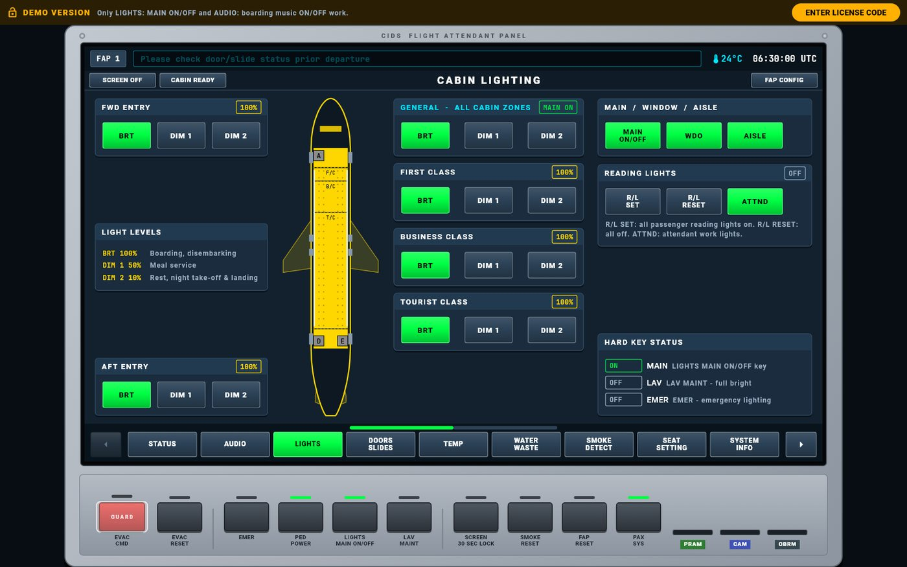
The demo includes one lighting function (MAIN ON/OFF on the Cabin Lighting page) and one audio function (boarding music ON/OFF on the Audio page), plus the LIGHTS and AUDIO page tabs. Touching any other key, page or hard key opens the Enter the license code window. Enter a license code there, or with the ENTER LICENSE CODE button in the bar, to unlock every function at once.
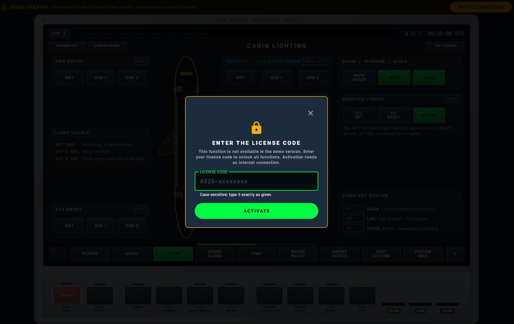
Important notice
At every start the app shows the Important Notice & Disclaimer (see Chapter 17). Read it and tap I AGREE & CONTINUE to open the panel.
The Screen
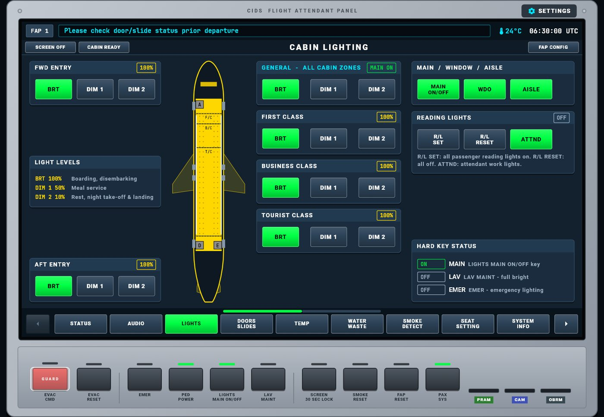
Header (top line)
| Item | What it shows |
|---|---|
| FAP 1 | The panel identifier. |
| Message line | Cautions and information, for example Please check door/slide status prior departure, PAX CALL 9E or SMOKE LAV D. Alarms appear in red. |
| Temperature | Average cabin temperature (°C or °F, see FAP CONFIG). |
| UTC clock | Current time in UTC. |
Title bar
| Key | Function |
|---|---|
| SCREEN OFF | Blanks the display. Touch the screen anywhere to wake it. |
| CABIN READY | Tells the flight crew the cabin is secured for take-off or landing. Green while active; press again to cancel. |
| Page title | Name of the open page. Short notices temporarily replace the title; during an evacuation it shows EVAC – PRESS EVAC RESET TO SILENCE and flashes red. |
| FAP CONFIG | Simulator settings (not part of the aircraft FAP): temperature unit CELSIUS / FAHRENHEIT and MUTE all audio. |
| ⚙ Gear icon | In the top-right corner of the tablet screen, outside the panel: license Settings (code, device ID, Deactivate & Transfer). See Chapter 2. |
Page tabs
The bottom of the screen has two rows of page tabs. The arrow keys at both ends switch between the rows; the bar above the tabs shows which row is displayed.
- Row 1, cabin pages: STATUS, AUDIO, LIGHTS, DOORS/SLIDES, TEMP, WATER/WASTE, SMOKE DETECT, SEAT SETTING, SYSTEM INFO.
- Row 2, CAM and maintenance pages: CABIN PROG, LAYOUT SELECT, LEVEL ADJUST, SW LOAD, FAP SET-UP (Chapter 13).
A tab whose system needs attention changes color even when you are on another page: SMOKE DETECT flashes red on smoke (amber while still monitoring), DOORS/SLIDES turns red when a slide is deployed, WATER/WASTE amber when the waste tank is full, SEAT SETTING amber on a passenger call, and SYSTEM INFO amber or red on CIDS faults.
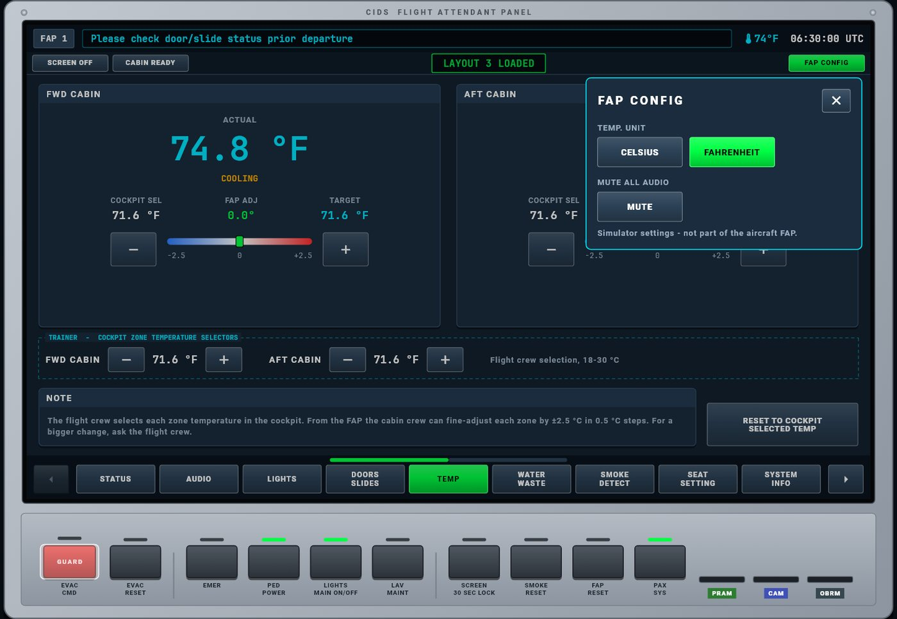
Cabin Status
One overview tile for every cabin system. Tap a tile to open that system's page.
| Tile | Summary shown |
|---|---|
| DOORS / SLIDES | Doors closed (for example 7/8) and slides armed (4/8). |
| CABIN LIGHTING | MAIN ON/OFF and the general light level. |
| AUDIO | Boarding music on/off and whether a PA announcement is playing. |
| CABIN TEMPERATURE | Actual FWD and AFT zone temperatures. |
| WATER / WASTE | Potable water and waste tank percentages. |
| SMOKE DETECTION | NORMAL, or the lavatory with smoke. |
| SYSTEM INFO | Active CIDS director and PAX SYS power. |
| EVAC | NORMAL, or evacuation command active. |
Audio
Boarding music, pre-recorded announcements (PRAM) and cabin call settings.
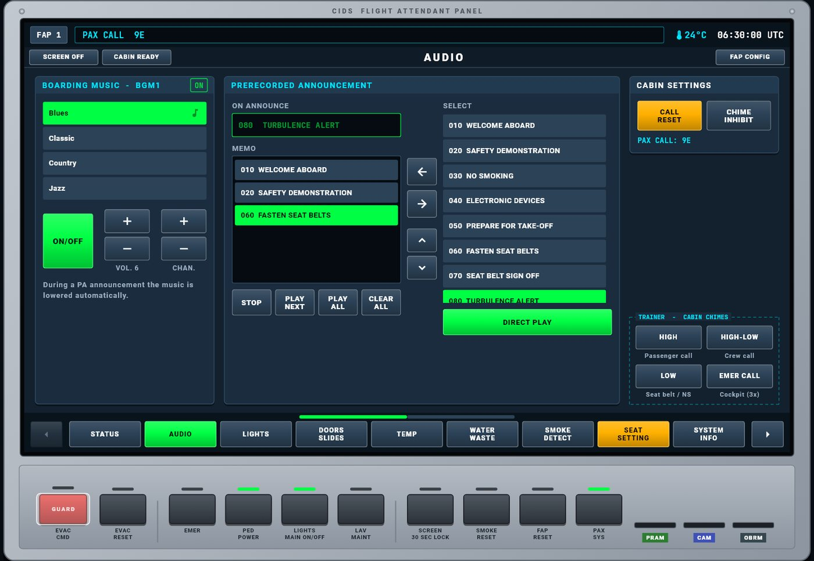
Boarding music (BGM1)
| Control | Function |
|---|---|
| Channel list | Four channels: Blues, Classic, Country, Jazz. Tap one to select it; a note symbol marks the channel playing. |
| ON/OFF | Starts or stops the boarding music. Green while playing. |
| VOL + / − | Music volume, 0 to 10. |
| CHAN + / − | Steps to the next or previous channel. |
Pre-recorded announcements (PRAM)
The SELECT list on the right holds the announcements stored on the PRAM card:
| Code | Announcement | Code | Announcement |
|---|---|---|---|
| 010 | Welcome aboard | 080 | Turbulence alert |
| 020 | Safety demonstration | 090 | Doctor on board |
| 030 | No smoking | 100 | Ground delay |
| 040 | Electronic devices | 110 | Descent preparation |
| 050 | Prepare for take-off | 120 | Final approach |
| 060 | Fasten seat belts | 130 | Arrival / disembark |
| 070 | Seat belt sign off |
| Control | Function |
|---|---|
| DIRECT PLAY | Plays the selected announcement immediately. |
| ← | Copies the selected announcement into the MEMO play list (left). |
| → | Takes the highlighted MEMO entry back out of the list. |
| ▲ / ▼ | Moves the highlighted MEMO entry up or down. |
| PLAY NEXT | Plays the first MEMO entry and removes it from the list. |
| PLAY ALL | Plays the whole MEMO list in order. |
| STOP | Stops the announcement (and PLAY ALL). |
| CLEAR ALL | Empties the MEMO list. |
| ON ANNOUNCE | Shows the announcement playing now. |
Cabin settings and chimes
| Control | Function |
|---|---|
| CALL RESET | Cancels every passenger call. Amber while calls are waiting; the seats calling are listed below it. |
| CHIME INHIBIT | Silences the cabin chimes. |
| TRAINER chimes | HIGH passenger call · HIGH-LOW crew call (interphone) · LOW seat belt / no smoking signs · EMER CALL emergency call from the cockpit (three times). |
Cabin Lighting
General illumination per cabin zone, window and aisle lights, and reading lights.
Light levels
| Level | Brightness | Typical use |
|---|---|---|
| BRT | 100 % | Boarding, disembarking |
| DIM 1 | 50 % | Meal service |
| DIM 2 | 10 % | Rest, night take-off and landing |
Zones
- FWD ENTRY and AFT ENTRY (left column) and one panel per passenger class of the active cabin layout (for example FIRST, BUSINESS and TOURIST CLASS). Each has BRT, DIM 1 and DIM 2; the tag shows the level in percent or OFF.
- Pressing the level that is already selected (green) switches that zone off.
- GENERAL – ALL CABIN ZONES sets every zone to the same level at once.
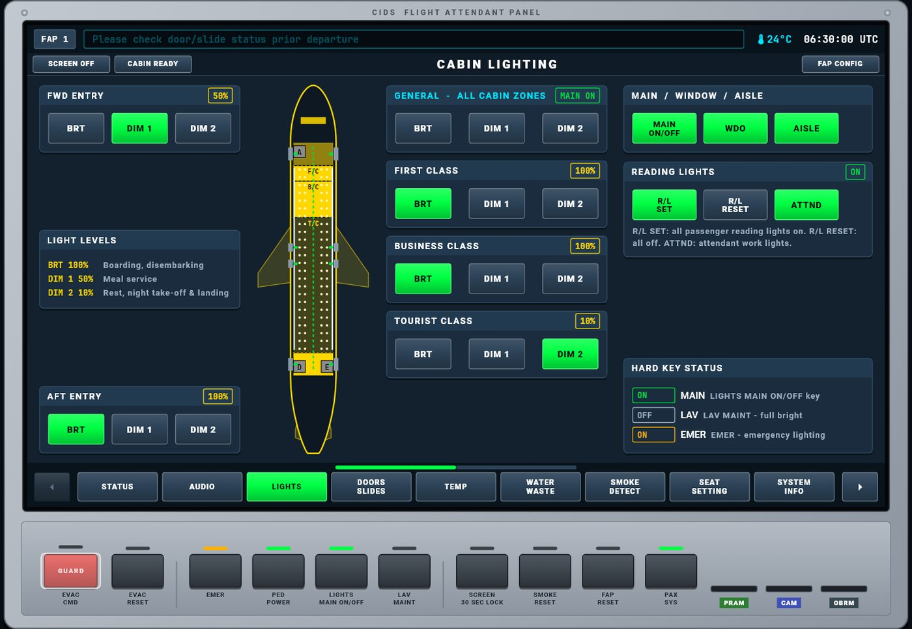
Main, window, aisle and reading lights
| Key | Function |
|---|---|
| MAIN ON/OFF | Switches the general cabin illumination on or off (same as the LIGHTS MAIN ON/OFF hard key). |
| WDO | Window lights. |
| AISLE | Aisle lights. |
| R/L SET | Switches on every passenger reading light (except seats inhibited on the Seat Settings page). |
| R/L RESET | Switches every reading light off. |
| ATTND | Attendant work lights. |
The HARD KEY STATUS panel shows the state of the lighting hard keys: MAIN, LAV MAINT (lavatory lights full bright) and EMER (emergency lighting).
Doors / Slides
Door and escape-slide status for all eight exits. The FAP only displays the status; the doors themselves are operated at the door, which the TRAINER controls simulate.
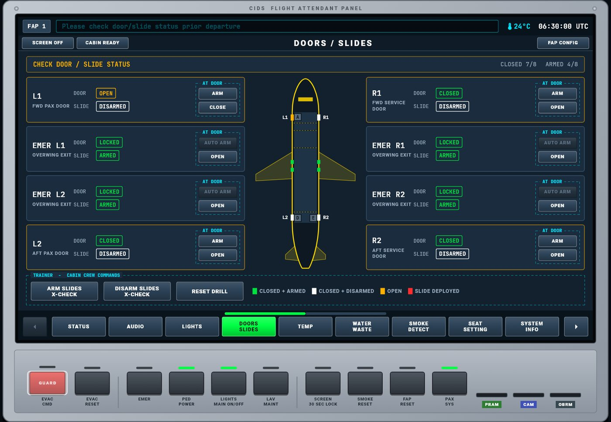
Exits
L1 forward passenger door, R1 forward service door, EMER L1 / L2 / R1 / R2 overwing emergency exits, L2 aft passenger door and R2 aft service door.
| Status | Meaning |
|---|---|
| DOOR: CLOSED / OPEN / LOCKED | Door position. Overwing exits show LOCKED. |
| SLIDE: ARMED / DISARMED | Escape slide arming. Overwing exit slides are permanently armed (AUTO ARM). |
| SLIDE DEPLOYED | The slide inflated (red alarm). |
Closed + armedClosed + disarmedOpenSlide deployed
TRAINER controls
| Control | Simulates |
|---|---|
| AT DOOR: ARM / DISARM | A crew member moving the slide arming lever at that door. |
| AT DOOR: OPEN / CLOSE | Opening or closing the door. |
| ARM SLIDES X-CHECK | The command "Cabin crew, arm slides and cross-check": every door slide is armed. |
| DISARM SLIDES X-CHECK | The command "Cabin crew, disarm slides and cross-check". |
| RESET DRILL | Returns every door and slide to its starting state (deployed slides are repacked) to run the drill again. |
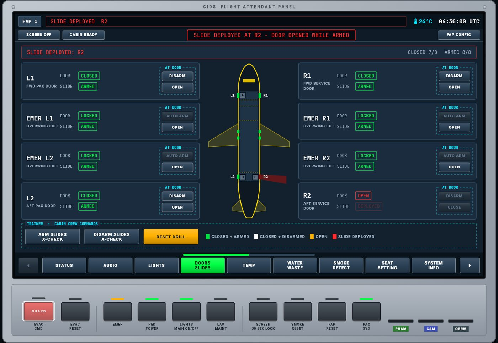
Cabin Temperature
The flight crew selects each zone temperature in the cockpit; the cabin crew can fine-tune it from the FAP.
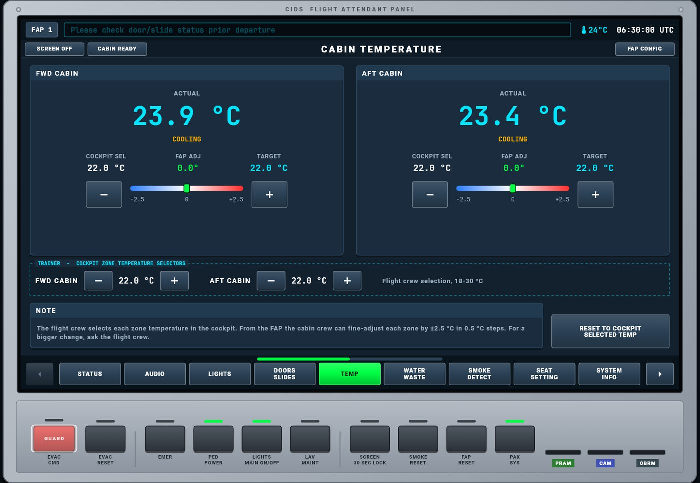
- Cockpit selection: 18 °C to 30 °C per zone (FWD and AFT). The TRAINER cockpit zone temperature selectors (− / +) simulate the flight crew changing it.
- FAP fine adjustment: − / + moves a zone up to ±2.5 °C around the cockpit selection. The indicator shows the offset.
- ACTUAL: the measured zone temperature. It moves gradually toward the target as the air-conditioning packs respond.
- RESET TO COCKPIT SELECTED TEMP removes all FAP adjustments.
- Switch between °C and °F with FAP CONFIG.
Water / Waste
Potable water and waste tank quantities, water preselection and lavatory status.
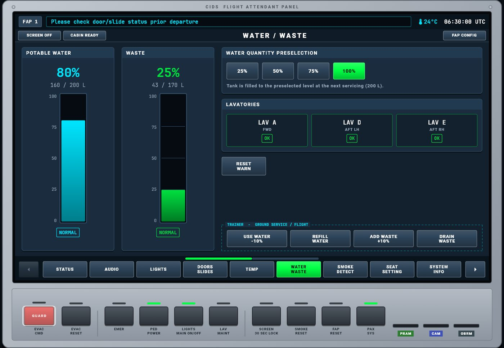
| Item | Details |
|---|---|
| POTABLE WATER | 200 L tank, shown in % and litres. Status NORMAL, LOW or EMPTY. |
| WASTE | 170 L tank. Status NORMAL, HIGH or TANK FULL. |
| WATER QUANTITY PRESELECTION | 25% 50% 75% 100%: the level the tank is filled to at the next servicing (saves weight on short flights). |
| LAVATORIES | Lavatories A, D and E: OK, NO WATER or INOP. |
| RESET WARN | Acknowledges the water/waste caution. It comes back if the condition clears and happens again. |
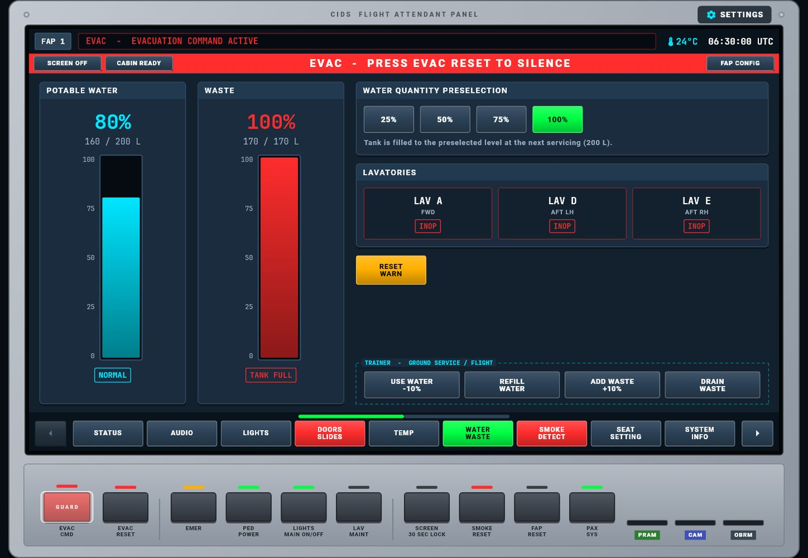
TRAINER – ground service / flight
USE WATER −10% REFILL WATER ADD WASTE +10% DRAIN WASTE simulate water use in flight and ground servicing. Draining the waste tank brings the lavatories back.
Smoke Detection
Smoke detectors in lavatories A (forward), D (aft left) and E (aft right).
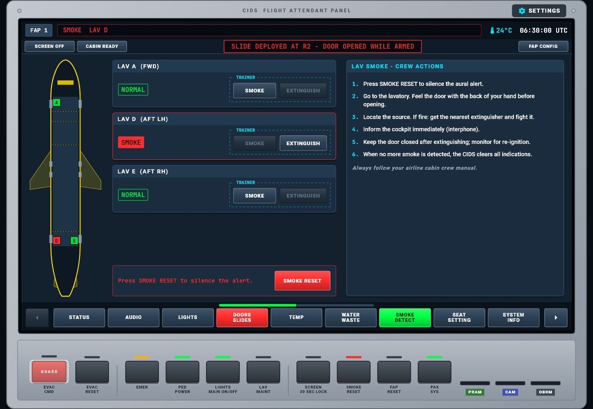
- On a smoke alert the SMOKE DETECTION page opens automatically, an aural alert sounds, the message line shows SMOKE LAV D and the tab flashes red.
- SMOKE RESET (on this page or the hard key) silences the aural alert and the cabin indications.
- The FAP keeps showing the smoke for as long as the detector still senses it.
- Once no more smoke is detected, the CIDS clears everything automatically.
TRAINER
SMOKE makes smoke appear in that lavatory; EXTINGUISH simulates the fire being put out (smoke cleared).
LAV SMOKE – CREW ACTIONS
- Press SMOKE RESET to silence the aural alert.
- Go to the lavatory. Feel the door with the back of your hand before opening.
- Locate the source. If fire: get the nearest extinguisher and fight it.
- Inform the cockpit immediately (interphone).
- Keep the door closed after extinguishing; monitor for re-ignition.
- When no more smoke is detected, the CIDS clears all indications.
Seat Settings
Inhibit the call button or reading light of single seats (for example a broken button), and cabin-wide call settings.
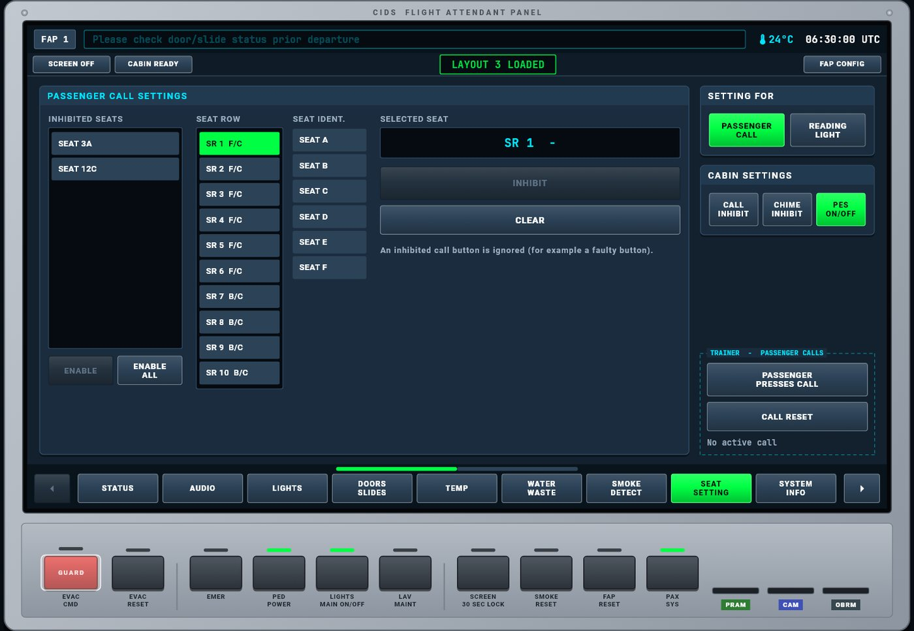
| Control | Function |
|---|---|
| SETTING FOR | PASSENGER CALL or READING LIGHT: chooses what the page works on. |
| SEAT ROW / SEAT IDENT. | Select the row and the seat letter (for example 9E). |
| INHIBIT / CLEAR | Adds the selected seat to the inhibited list, or clears the selection. |
| ENABLE / ENABLE ALL | Re-enables the highlighted seat, or every inhibited seat. |
| CABIN SETTINGS | CALL INHIBIT (ignores all passenger call buttons), CHIME INHIBIT, and PES ON/OFF (passenger entertainment power). |
Seats with an inhibited reading light stay off when R/L SET is pressed on the Cabin Lighting page.
TRAINER – passenger calls
PASSENGER PRESSES CALL simulates a call from a random seat: a high chime sounds, the message line shows PAX CALL with the seat, and the SEAT SETTING tab turns amber. CALL RESET cancels all calls.
System Info
CIDS health and messages, plus trainer fault injection and cockpit events.
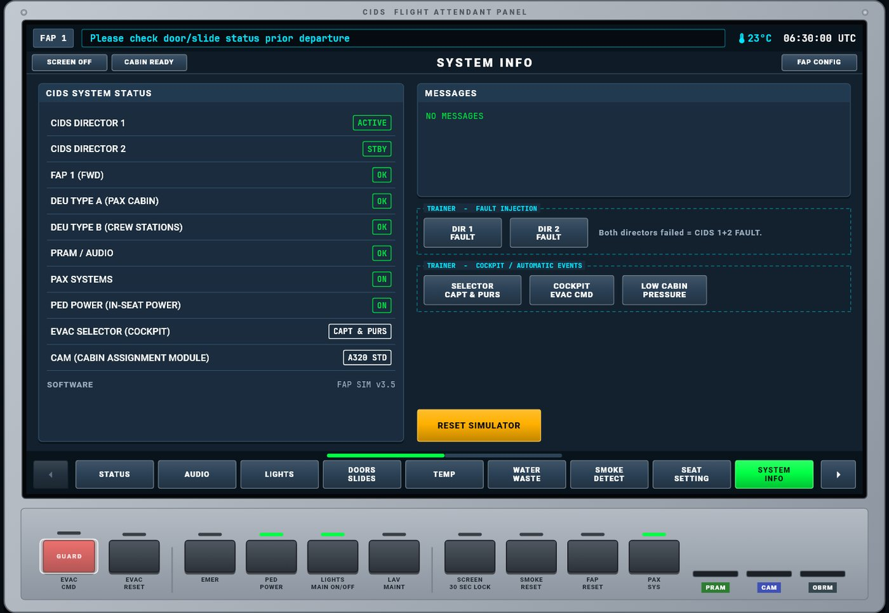
- CIDS SYSTEM STATUS: the two CIDS directors (DIR 1 / DIR 2) and which one is active, PAX SYS, the EVAC selector position (CAPT or CAPT & PURS) and the FAP software version.
- MESSAGES: current CIDS messages and faults.
TRAINER – fault injection
DIR 1 FAULT / DIR 2 FAULT fail a director; the other takes over (amber). With both failed the cockpit ECAM shows CIDS 1+2 FAULT: PA announcements, interphone and passenger signs are lost and the SYSTEM INFO tab turns red.
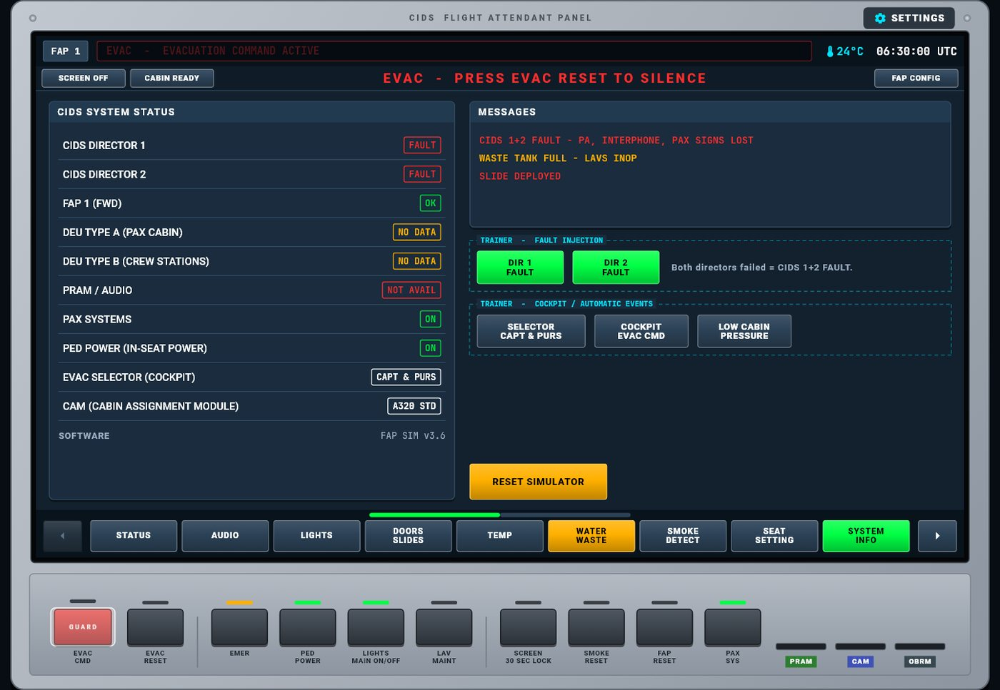
TRAINER – cockpit / automatic events
| Control | Simulates |
|---|---|
| SELECTOR CAPT / CAPT & PURS | The cockpit evacuation selector. In CAPT, an EVAC CMD from the cabin only sounds the cockpit horn for 3 seconds; in CAPT & PURS it triggers the cabin evacuation alert. |
| COCKPIT EVAC CMD | The flight crew sets EVAC COMMAND ON: EVAC COMMANDED FROM THE COCKPIT. |
| LOW CABIN PRESSURE | Low cabin pressure: the CIDS switches the cabin lights to BRT automatically. |
| RESET SIMULATOR | Restores factory defaults (after a confirmation). |
CAM & Maintenance Pages
The second row of tabs holds the cabin programming and maintenance pages. Most of them are protected by an access code.
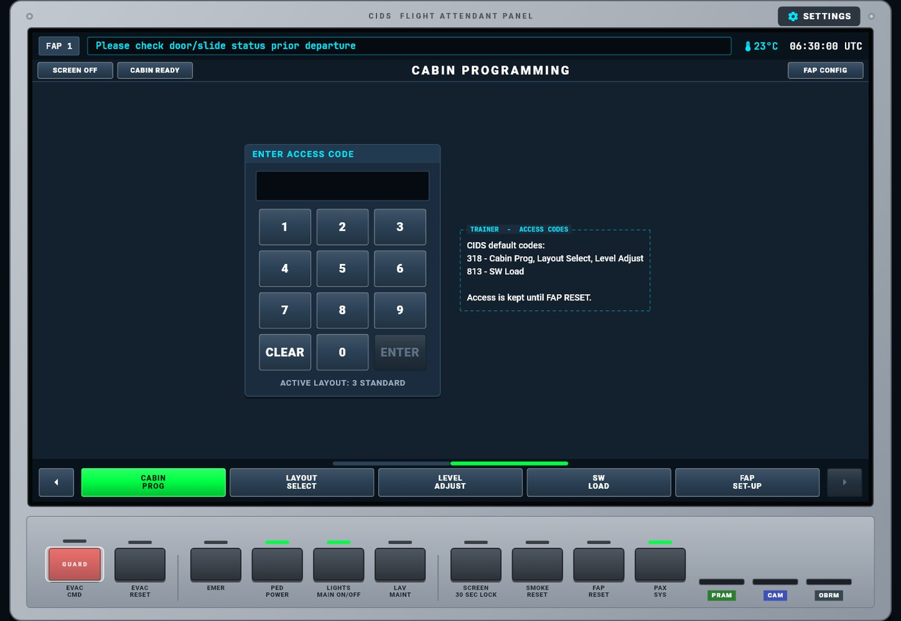
| Page | Access code (CIDS default) |
|---|---|
| CABIN PROG, LAYOUT SELECT, LEVEL ADJUST | 318 |
| SW LOAD | 813 |
| FAP SET-UP | No code |
The codes are also shown in the TRAINER box of the keypad. FAP RESET locks the protected pages again.
Cabin Programming
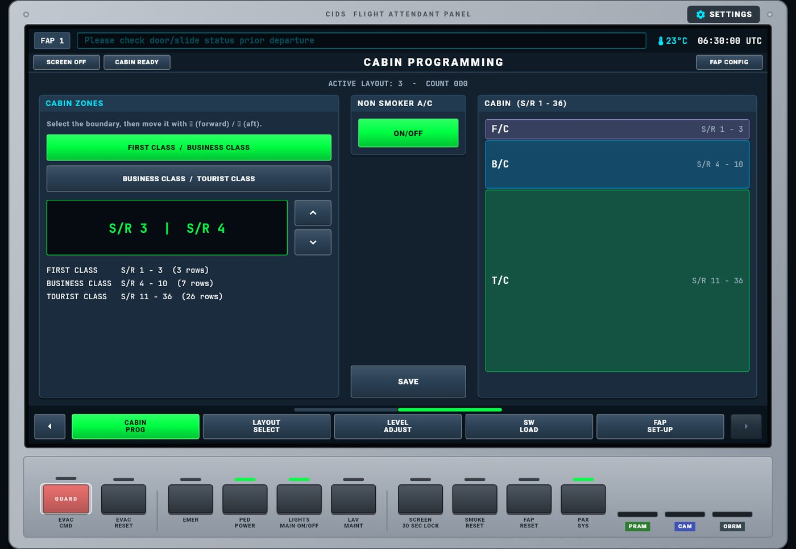
- CABIN ZONES: choose a class boundary and move it by seat rows with the arrow keys; the cabin drawing shows each class with its seat rows.
- NON SMOKER A/C ON/OFF: the non-smoking aircraft flag.
- SAVE writes the programming to the CAM. The layout becomes MODIFIED and its change counter goes up.
Layout Selection
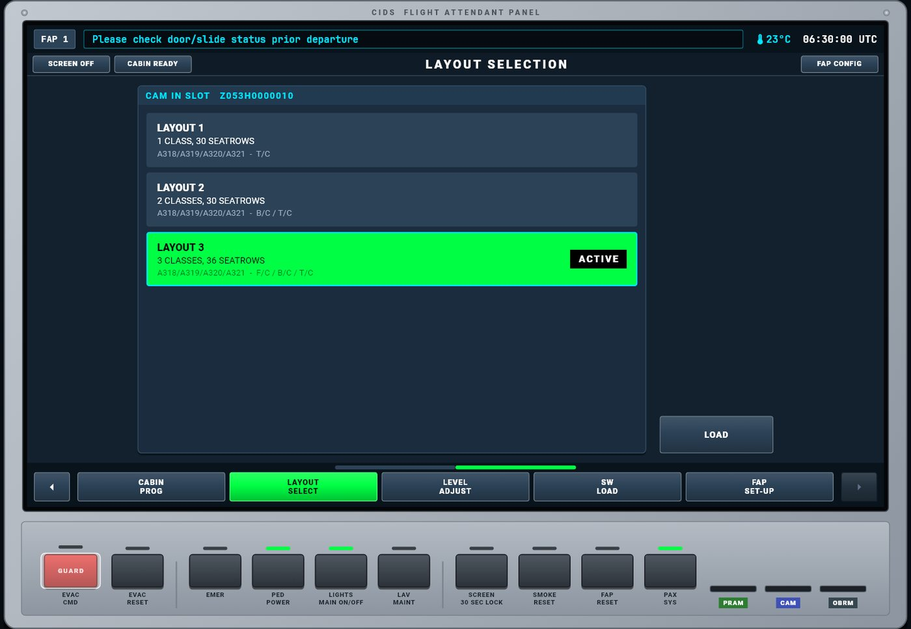
Select a 1-, 2- or 3-class layout and press LOAD to make it active. The lighting zones, seat rows and level adjustment follow the active layout.
Level Adjustment
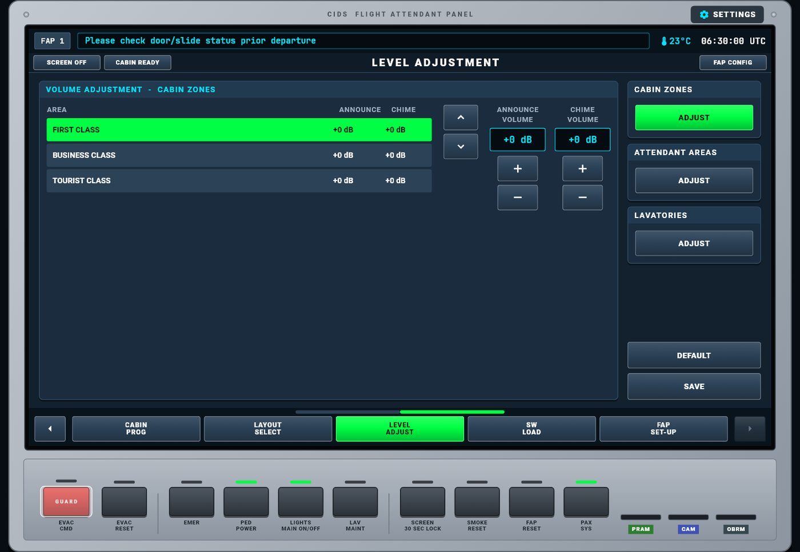
Announcement and chime loudspeaker levels per cabin zone, attendant area and lavatory, from −6 to +6 dB. Press ADJUST on a group (cabin zones, attendant areas or lavatories) to show it, pick an area with the arrow keys, and set its ANNOUNCE and CHIME levels with + / −. DEFAULT returns the group to +0 dB; SAVE stores the levels. Cabin zone levels change how loud PA announcements and chimes play in the simulator.
Software Loading
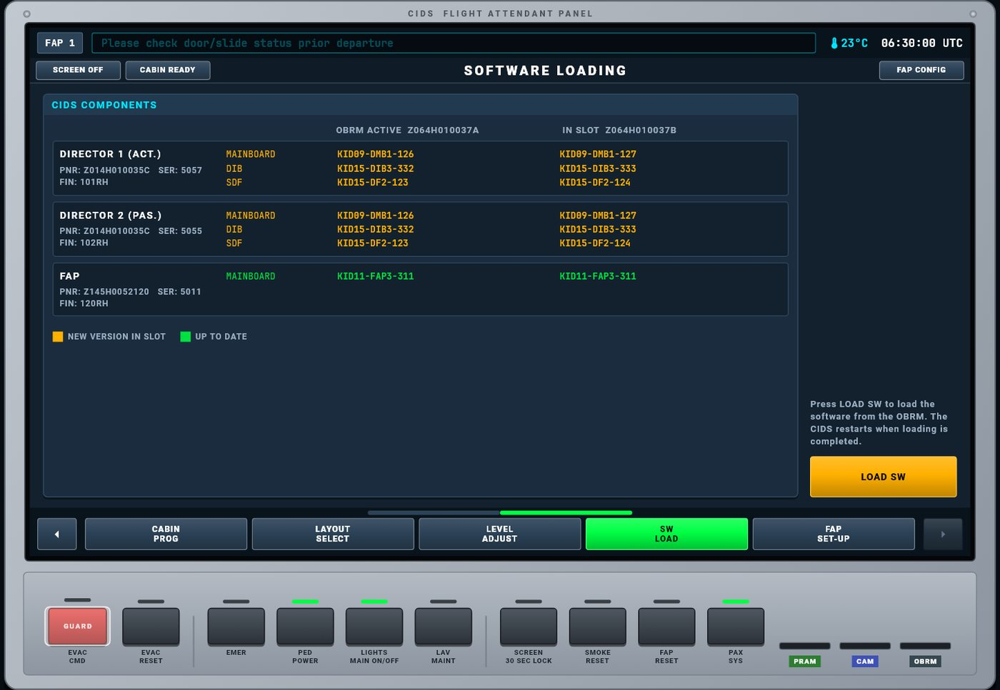
Lists the CIDS components with the active software version and the version on the OBRM card in the slot. Amber: a different version is waiting to be loaded. Green: up to date. LOAD SW loads it; the panel is blocked during loading and the CIDS restarts automatically.
FAP Set-Up
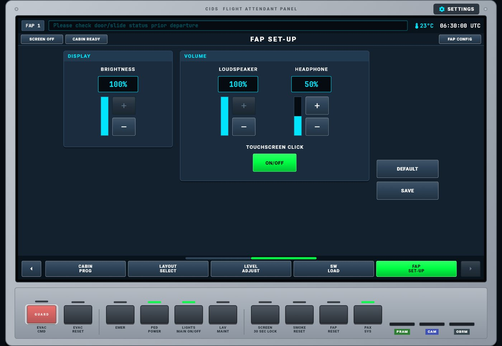
DISPLAY brightness, loudspeaker and headphone VOLUME (+ / −), and the TOUCHSCREEN CLICK (ON/OFF). DEFAULT restores the factory values and SAVE stores them.
Hard Keys
Ten physical keys below the touchscreen. A light above each key shows when its function is on. Hard keys keep working while the touchscreen is locked.
| Key | Function |
|---|---|
| EVAC CMD | Evacuation command, under a hinged guard: the first tap lifts the guard, then press the key. With the cockpit selector in CAPT & PURS the evacuation alert sounds in the cabin; in CAPT only the cockpit horn sounds for 3 s. Tapping the lifted guard closes it. |
| EVAC RESET | Silences the EVAC tone at this station and clears the EVAC indications. |
| EMER | Cabin emergency lighting on/off. |
| PED POWER | Passenger in-seat power supply on/off. |
| LIGHTS MAIN ON/OFF | General cabin illumination on/off (same as MAIN ON/OFF on the lighting page). |
| LAV MAINT | Lavatory lights full bright for maintenance. |
| SCREEN 30 SEC LOCK | Disables the touchscreen for 30 seconds so it can be cleaned (CLEAN FUNCTION with a countdown). |
| SMOKE RESET | Silences the lavatory smoke alert (Chapter 10). |
| FAP RESET | Restarts the FAP computer. Only the screen restarts; the cabin systems keep their state. Protected pages are locked again. |
| PAX SYS | Passenger system power on/off. |
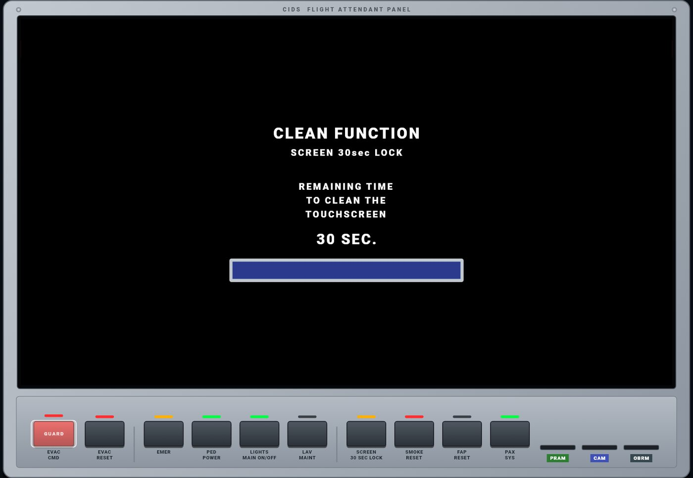
Card slots
PRAM pre-recorded announcements · CAM cabin assignment module (layouts and cabin programming) · OBRM on-board replaceable module (software loading).
Training Drills
Suggested classroom exercises. The instructor creates the situation with the TRAINER controls; the student responds with the FAP keys only.
Drill 1 – Boarding
- LIGHTS: GENERAL BRT, MAIN on, ATTND on.
- AUDIO: select a music channel and press ON/OFF; adjust VOL.
- When boarding is complete, play 010 Welcome aboard with DIRECT PLAY, then stop the music.
Drill 2 – Arm slides and cross-check
- Instructor: ARM SLIDES X-CHECK (or arm individual doors with AT DOOR).
- Student: open DOORS/SLIDES and confirm every door shows CLOSED + ARMED (green).
- Report any door not armed; the message line reminds Please check door/slide status prior departure.
- Press CABIN READY once the cabin is secured.
Drill 3 – Pre-departure announcements
- AUDIO: add 020, 040 and 050 to MEMO with ←; order them with ▲ / ▼.
- Press PLAY ALL, or PLAY NEXT one at a time.
- LIGHTS: set DIM 2 for a night take-off.
Drill 4 – Lavatory smoke
- Instructor: SMOKE DETECTION TRAINER SMOKE on a lavatory.
- Student: the page opens automatically; press SMOKE RESET.
- Follow the six crew actions (Chapter 10) and inform the cockpit.
- Instructor: EXTINGUISH; the CIDS clears the alert automatically.
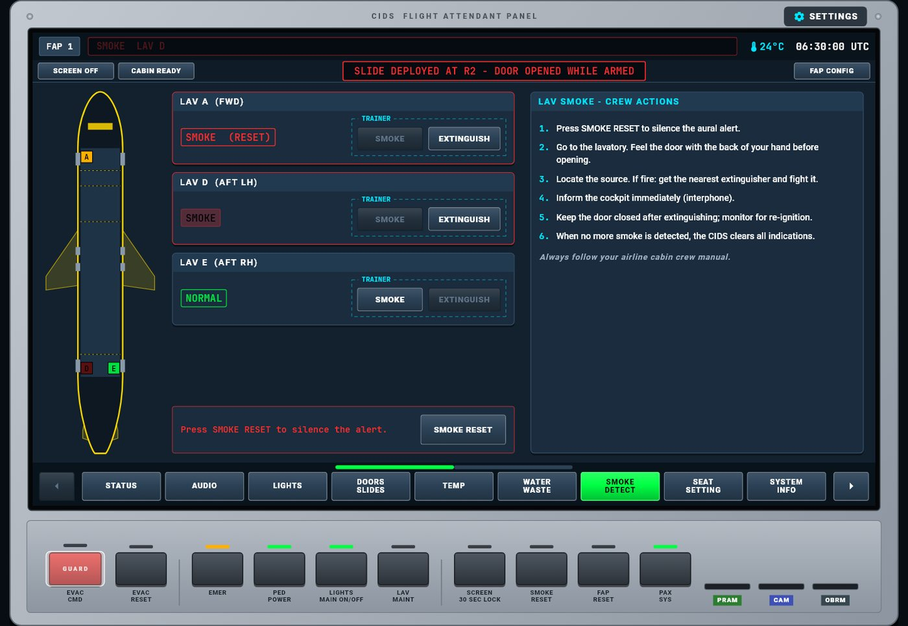
Drill 5 – Evacuation
- Instructor: set the selector to CAPT & PURS (SYSTEM INFO), or use COCKPIT EVAC CMD.
- Student: lift the guard and press EVAC CMD. The evacuation alert sounds and the title bar flashes red.
- Press EVAC RESET to silence the tone at this station.
- Repeat with the selector in CAPT: only the cockpit horn sounds for 3 s.
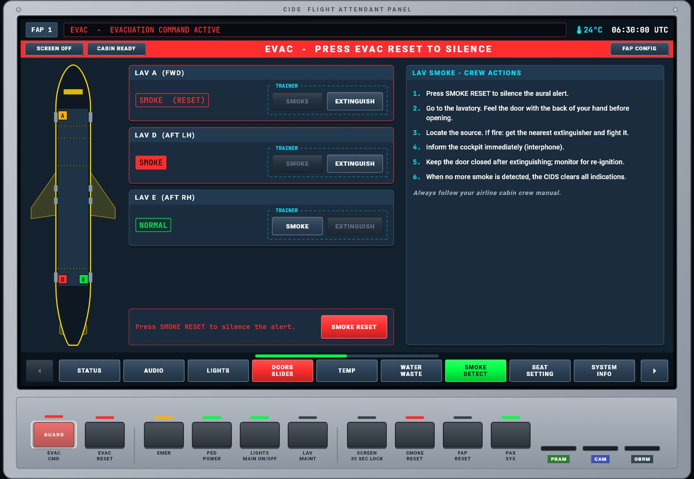
Drill 6 – Slide deployment
- With slides armed, the instructor opens a door with AT DOOR OPEN.
- Student: identify the red SLIDE DEPLOYED alarm and the door concerned, and report it.
- Instructor: RESET DRILL.
Drill 7 – Passenger call and seat inhibit
- Instructor: PASSENGER PRESSES CALL several times.
- Student: read the seats on the message line or the Audio page, answer them, then CALL RESET.
- Inhibit the call button of a "broken" seat on SEAT SETTINGS.
Drill 8 – Water / waste and CIDS faults
- Instructor: ADD WASTE +10% until the tank is full; student identifies the INOP lavatories and presses RESET WARN.
- Instructor: DIR 1 FAULT, then DIR 2 FAULT; student explains the CIDS 1+2 FAULT consequences (no PA, interphone or signs).
Troubleshooting & FAQ
License messages
| Message | What to do |
|---|---|
| Invalid license code. | Check the code letter by letter: capital and small letters matter. |
| This code has already been used on another device. | Each code works on one device only. Ask your instructor for a new code. |
| Too many attempts. | Wait 15 minutes, then try again. |
| No internet connection. | Activation must be done online. Connect to Wi-Fi or mobile data. |
| That is the demo code. | A320-DEMO only opens the demo. Enter your license code to unlock everything. |
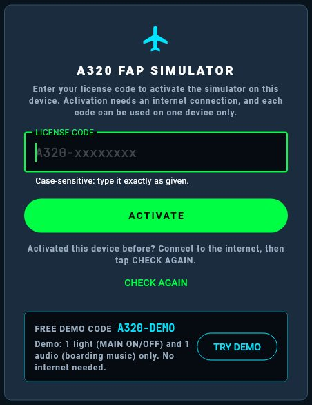
Common questions
Do I need internet in the classroom?
No. Internet is needed only once, to activate the license code. After that the simulator runs fully offline.
I uninstalled the app. Do I need a new code?
No. Install it again on the same tablet and open it while online; it is restored automatically. A factory reset counts as a new device.
I have a new tablet. Can I keep my code?
Yes. On the old tablet open Settings (gear icon) and tap DEACTIVATE & TRANSFER LICENSE (internet needed), then enter the same code on the new tablet. If the old tablet is broken, ask the administrator to release the code.
The app went back to the activation screen by itself.
The license was moved to another device (deactivated there or released by the administrator). Enter a valid code to activate again.
A page asks for an access code.
CABIN PROG, LAYOUT SELECT and LEVEL ADJUST use 318; SW LOAD uses 813.
The screen is black.
SCREEN OFF is active: touch the screen to wake it. During SCREEN 30 SEC LOCK, wait for the countdown.
There is no sound.
Check the tablet volume, MUTE in FAP CONFIG, CHIME INHIBIT, the loudspeaker volume in FAP SET-UP, and the levels in LEVEL ADJUST.
How do I start a drill again from the beginning?
Use RESET DRILL on the Doors page, or RESET SIMULATOR on SYSTEM INFO to restore all factory defaults.
Important Notice & Disclaimer
This software (A320 FAP Simulator) is developed by Overdrive Interactive for academic, familiarization, and educational training purposes only.
- NOT AN OFFICIALLY CERTIFIED FTD: This application is a classroom supplement and is NOT certified by Airbus, FAA, EASA, CAAP, or any civil aviation authority for official type-rating or flight training credits.
- NO AFFILIATION: "A320" and related aircraft trademarks belong to Airbus. Overdrive Interactive is an independent entity with no official endorsement or affiliation with Airbus.
- ACCURACY & LIABILITY: While modeled for realistic interaction, operational variances may exist. This software must NOT be used for real-world aircraft operation, checklist validation, or actual emergency procedures. Overdrive Interactive assumes no liability for misuse.
© Overdrive Interactive · A320 FAP Simulator v3.6 · User Manual